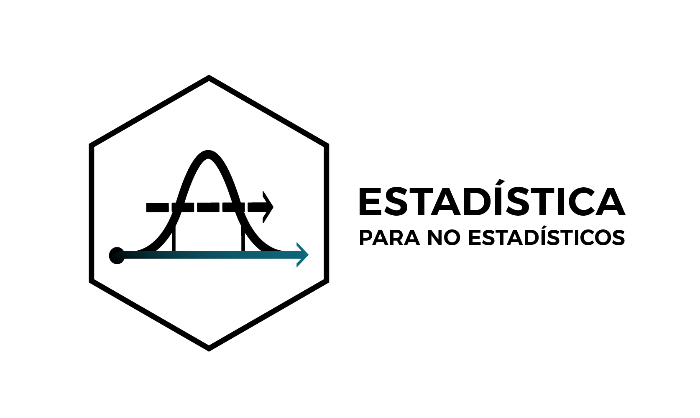

Capítulo 6 Acerca del autor

ALEXANDER ANDRADE
Asesor Estadístico en Estadística para No Estadísticos
Estadística para No Estadísticos brinda asesoría y tutoría estadística en:
- Data Science para: Instituciones, Empresas y Profesionales
- Trabajos de Titulación (Pregrado y Posgrado)
- Artículos Científicos (Papers)
- Artículos de Revisión Bibliográfica mediante Minería de Texto
¿Tienes dudas o comentarios?
Contáctanos: www.estadisticaparanoestadisticos.com